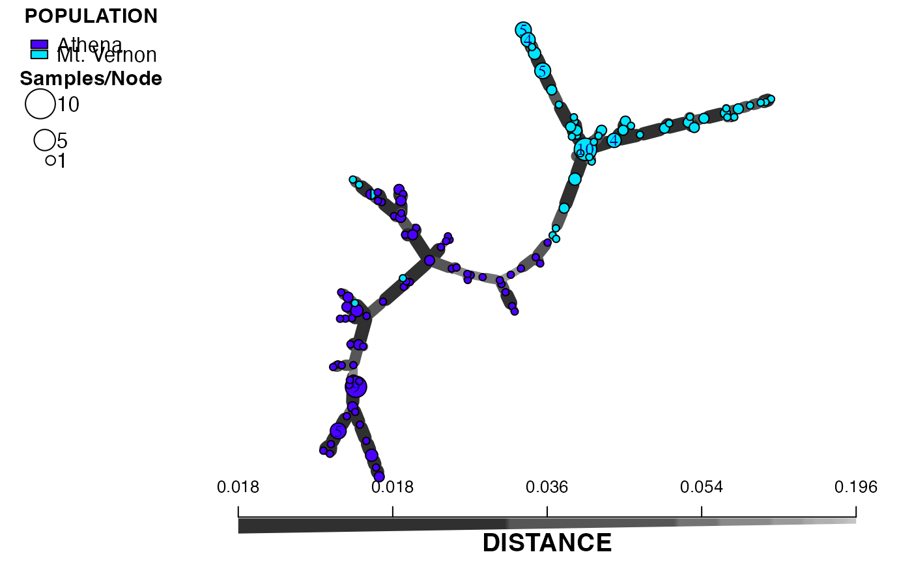
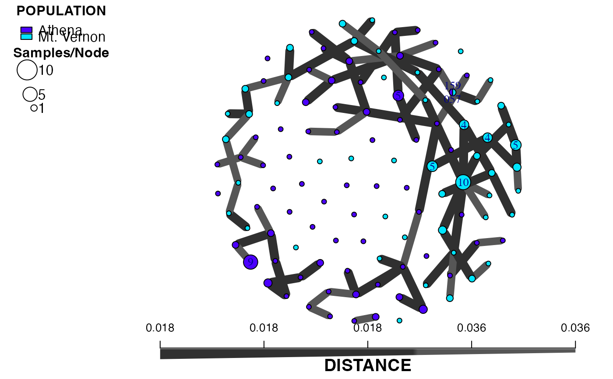
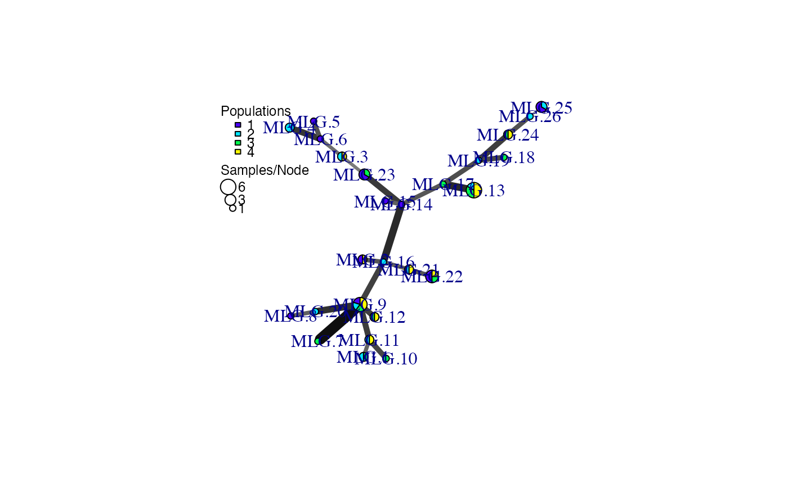
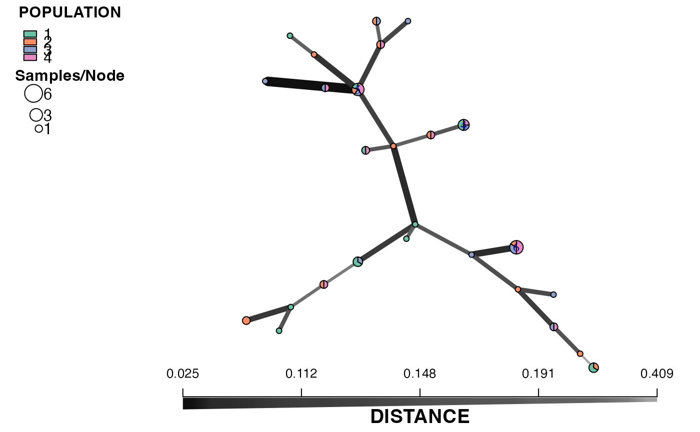
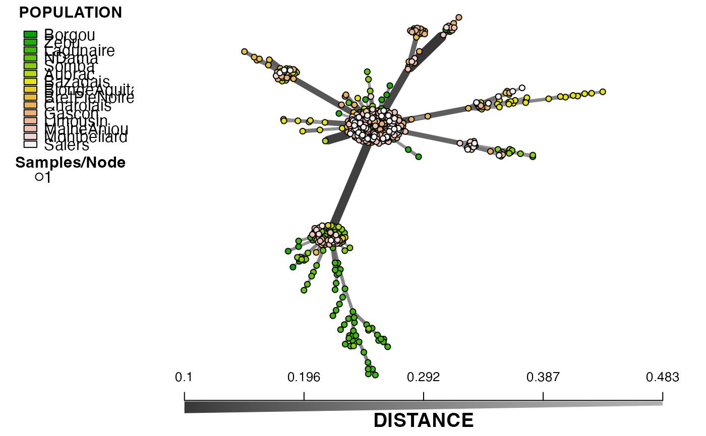
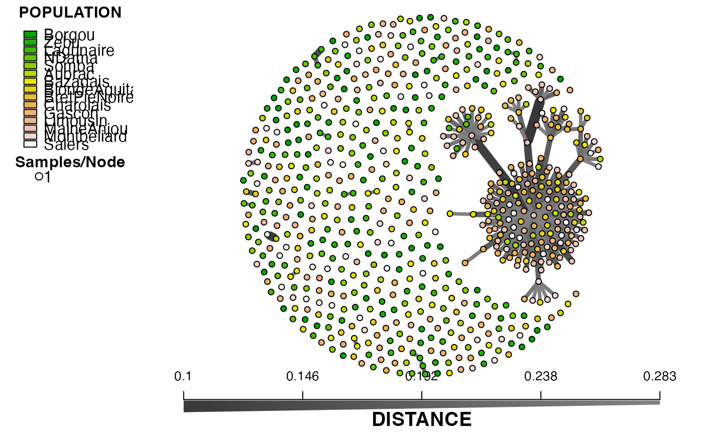
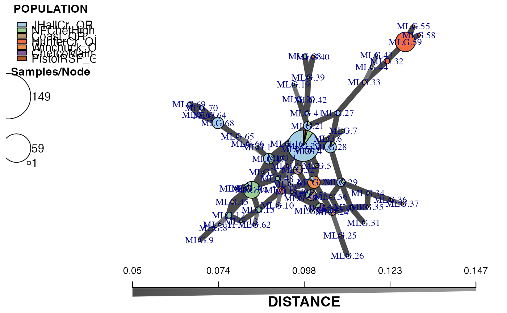
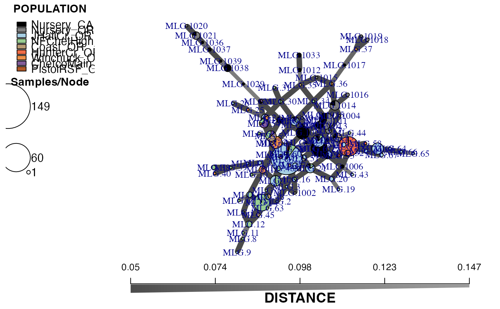

This function allows you to take the output of poppr.msn and bruvo.msn and customize the plot by labeling groups of individuals, size of nodes, and adjusting the palette and scale bar.
Usage
plot_poppr_msn(
x,
poppr_msn,
gscale = TRUE,
gadj = 3,
mlg.compute = "original",
glim = c(0, 0.8),
gweight = 1,
wscale = TRUE,
nodescale = 10,
nodebase = NULL,
nodelab = 2,
inds = "ALL",
mlg = FALSE,
quantiles = TRUE,
cutoff = NULL,
palette = NULL,
layfun = layout.auto,
beforecut = FALSE,
pop.leg = TRUE,
size.leg = TRUE,
scale.leg = TRUE,
...
)Arguments
- x
a
genind,genclone,genlight, orsnpcloneobject from whichpoppr_msnwas derived.- poppr_msn
a
listproduced from eitherpoppr.msnorbruvo.msn. This list should contain a graph, a vector of population names and a vector of hexadecimal color definitions for each population.- gscale
"grey scale". If this is
TRUE, this will scale the color of the edges proportional to the observed distance, with the lines becoming darker for more related nodes. Seegreycurvefor details.- gadj
"grey adjust". a positive
integergreater than zero that will serve as the exponent to the edge weight to scale the grey value to represent that weight.- mlg.compute
if the multilocus genotypes are set to "custom" (see
mll.customfor details) in your genclone object, this will specify which mlg level to calculate the nodes from. See details.- glim
"grey limit". Two numbers between zero and one. They determine the upper and lower limits for the
grayfunction. Default is 0 (black) and 0.8 (20% black).- gweight
"grey weight". an
integer. If it's 1, the grey scale will be weighted to emphasize the differences between closely related nodes. If it is 2, the grey scale will be weighted to emphasize the differences between more distantly related nodes.- wscale
"width scale". If this is
TRUE, the edge widths will be scaled proportional to the inverse of the observed distance , with the lines becoming thicker for more related nodes.- nodescale
a
numericindicating how to scale the node sizes (scales by area).- nodebase
deprecated a
numericindicating what base logarithm should be used to scale the node sizes. Defaults to 1.15. See details.- nodelab
an
integerspecifying the smallest size of node to label. See details.- inds
a
characterornumericvector indicating which samples or multilocus genotypes to label on the graph. See details.- mlg
logicalWhenTRUE, the nodes will be labeled by multilocus genotype. WhenFALSE(default), nodes will be labeled by sample names.- quantiles
logical. When set toTRUE(default), the scale bar will be composed of the quantiles from the observed edge weights. When set toFALSE, the scale bar will be composed of a smooth gradient from the minimum edge weight to the maximum edge weight.- cutoff
a number indicating the longest distance to display in your graph. This is performed by removing edges with weights greater than this number.
- palette
a function or character corresponding to a specific palette you want to use to delimit your populations. The default is whatever palette was used to produce the original graph.
- layfun
a function specifying the layout of nodes in your graph. It defaults to
layout.auto.- beforecut
if
TRUE, the layout of the graph will be computed before any edges are removed withcutoff. IfFALSE(Default), the layout will be computed after any edges are removed.- pop.leg
if
TRUE, a legend indicating the populations will appear in the top right corner of the graph, but will not overlap. Settingpop.leg = FALSEdisables this legend. See details.- size.leg
if
TRUE, a legend displyaing the number of samples per node will appear either below the population legend or in the top right corner of the graph. Settingsize.leg = FALSEdisables this legend.- scale.leg
if
TRUE, a scale bar indicating the distance will appear under the graph. Settingscale.leg = FALSEsuppresses this bar. See details.- ...
any other parameters to be passed on to
plot.igraph.
Details
The previous incarnation of msn plotting in poppr simply plotted the minimum spanning network with the legend of populations, but did not provide a scale bar and it did not provide the user a simple way of manipulating the layout or labels. This function allows the user to manipulate many facets of graph creation, making the creation of minimum spanning networks ever so slightly more user friendly.
This function must have both the source data and the output msn to work. The source data must contain the same population structure as the graph. Every other parameter has a default setting.
Parameter details
indsBy default, the graph will label each node (circle) with all of the samples (individuals) that are contained within that node. As each node represents a single multilocus genotype (MLG) or individuals (n >= 1), this argument is designed to allow you to selectively label the nodes based on query of sample name or MLG number. If the optionmlg = TRUE, the multilocus genotype assignment will be used to label the node. If you do not want to label the nodes by individual or multilocus genotype, simply set this to a name that doesn't exist in your data.nodescaleThe nodes (circles) on the graph represent different multilocus genotypes. The area of the nodes represent the number of individuals. Setting nodescale will scale the area of the nodes.nodelabIf a node is not labeled by individual, this will label the size of the nodes greater than or equal to this value. If you don't want to label the size of the nodes, simply set this to a very high number.cutoffThis is useful for when you want to investigate groups of multilocus genotypes separated by a specific distance or if you have two distinct populations and you want to physically separate them in your network.beforecutThis is an indicator useful if you want to maintain the same position of the nodes before and after removing edges with thecutoffargument. This works best if you set a seed before you run the function.
mlg.compute
Each node on the graph represents a different multilocus genotype.
The edges on the graph represent genetic distances that connect the
multilocus genotypes. In genclone objects, it is possible to set the
multilocus genotypes to a custom definition. This creates a problem for
clone correction, however, as it is very possible to define custom lineages
that are not monophyletic. When clone correction is performed on these
definitions, information is lost from the graph. To circumvent this, The
clone correction will be done via the computed multilocus genotypes, either
"original" or "contracted". This is specified in the mlg.compute
argument, above.
legends
To avoid drawing the legend over the graph, legends
are separated by different plotting areas. This means that if legends are
included, you cannot plot multiple MSNs in a single plot. The scale bar (to
be added in manually) can be obtained from greycurve and the
legend can be plotted with legend.
Examples
# Using a data set of the Aphanomyces eutieches root rot pathogen.
data(Aeut)
adist <- diss.dist(Aeut, percent = TRUE)
amsn <- poppr.msn(Aeut, adist, showplot = FALSE)
# Default
library("igraph") # To get all the layouts.
#>
#> Attaching package: ‘igraph’
#> The following objects are masked from ‘package:ape’:
#>
#> degree, edges, mst, ring
#> The following objects are masked from ‘package:stats’:
#>
#> decompose, spectrum
#> The following object is masked from ‘package:base’:
#>
#> union
set.seed(500)
plot_poppr_msn(Aeut, amsn, gadj = 15)
# \dontrun{
# Different layouts (from igraph) can be used by supplying the function name.
set.seed(500)
plot_poppr_msn(Aeut, amsn, gadj = 15, layfun = layout_with_kk)
# Removing link between populations (cutoff = 0.2) and labelling no individuals
set.seed(500)
plot_poppr_msn(Aeut, amsn, inds = "none", gadj = 15, beforecut = TRUE, cutoff = 0.2)

# Labelling individual #57 because it is an MLG that crosses populations
# Showing clusters of MLGS with at most 5% variation
# Notice that the Mt. Vernon population appears to be more clonal
set.seed(50)
plot_poppr_msn(Aeut, amsn, gadj = 15, cutoff = 0.05, inds = "057")

data(partial_clone)
pcmsn <- bruvo.msn(partial_clone, replen = rep(1, 10))

# You can plot using a color palette or a vector of named colors
# Here's a way to define the colors beforehand
pc_colors <- nPop(partial_clone) %>%
RColorBrewer::brewer.pal("Set2") %>%
setNames(popNames(partial_clone))
pc_colors
#> 1 2 3 4
#> "#66C2A5" "#FC8D62" "#8DA0CB" "#E78AC3"
# Labelling the samples contained in multilocus genotype 9
set.seed(999)
plot_poppr_msn(partial_clone, pcmsn, palette = pc_colors, inds = 9)
# Doing the same thing, but using one of the sample names as input.
set.seed(999)
plot_poppr_msn(partial_clone, pcmsn, palette = pc_colors, inds = "sim 20")
# Note that this is case sensitive. Nothing is labeled.
set.seed(999)
plot_poppr_msn(partial_clone, pcmsn, palette = pc_colors, inds = "Sim 20")

# Something pretty
data(microbov)
mdist <- diss.dist(microbov, percent = TRUE)
micmsn <- poppr.msn(microbov, mdist, showplot = FALSE)
plot_poppr_msn(microbov, micmsn, palette = "terrain.colors", inds = "n",
quantiles = FALSE)

plot_poppr_msn(microbov, micmsn, palette = "terrain.colors", inds = "n",
cutoff = 0.3, quantiles = FALSE)

### Utilizing vectors for palettes
data(Pram)
Pram_sub <- popsub(Pram, exclude = c("Nursery_CA", "Nursery_OR"))
# Creating the network for the forest
min_span_net_sub <- bruvo.msn(Pram_sub, replen = other(Pram)$REPLEN,
add = TRUE, loss = TRUE, showplot = FALSE,
include.ties = TRUE)
# Creating the network with nurseries
min_span_net <- bruvo.msn(Pram, replen = other(Pram)$REPLEN,
add = TRUE, loss = TRUE, showplot = FALSE,
include.ties = TRUE)
# Only forest genotypes
set.seed(70)
plot_poppr_msn(Pram,
min_span_net_sub,
inds = "ALL",
mlg = TRUE,
gadj = 9,
nodescale = 5,
palette = other(Pram)$comparePal,
cutoff = NULL,
quantiles = FALSE,
beforecut = TRUE)

# With Nurseries
set.seed(70)
plot_poppr_msn(Pram,
min_span_net,
inds = "ALL",
mlg = TRUE,
gadj = 9,
nodescale = 5,
palette = other(Pram)$comparePal,
cutoff = NULL,
quantiles = FALSE,
beforecut = TRUE)

# }